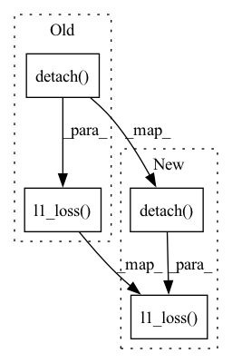

Pattern ID :37397

Before Change
feats_hat_ = feats_hat_[:-1]
feats_ = feats_[:-1]
for j, (feat_hat_, feat_) in enumerate(zip(feats_hat_, feats_)):
feat_match_loss_ += F.l1_loss(feat_hat_, feat_.detach())
if self.average_by_layers:
feat_match_loss_ /= j + 1
feat_match_loss += feat_match_loss_
if self.average_by_discriminators:
After Change
feats_hat_ = feats_hat_[:-1]
feats_ = feats_[:-1]
for j, (feat_hat_, feat_) in enumerate(zip(feats_hat_, feats_)):
feat_match_loss_ = feat_match_loss + F.l1_loss(feat_hat_, feat_.detach())
if self.average_by_layers:
feat_match_loss_ /= j + 1
feat_match_loss = feat_match_loss + feat_match_loss_
if self.average_by_discriminators:
In pattern: SUPERPATTERN
Frequency: 3
Non-data size: 4
Instances
Fragment ID: 107694430
Project Name: digitalphonetics/ims-toucan
Commit Name: 0c62eba4c06d41f49d35a03b02044c322f6a5448
Time: 2021-10-07
Author: florian.lux@ims.uni-stuttgart.de
File Name: TrainingInterfaces/Spectrogram_to_Wave/HiFIGAN/FeatureMatchingLoss.py
M Class Name: FeatureMatchLoss
N Class Name: FeatureMatchLoss
M Method Name: forward(3)
N Method Name: forward(3)
M Parent Class: torch.nn.Module
N Parent Class: torch.nn.Module
M File Name: TrainingInterfaces/Spectrogram_to_Wave/HiFIGAN/FeatureMatchingLoss.py
N File Name: TrainingInterfaces/Spectrogram_to_Wave/HiFIGAN/FeatureMatchingLoss.py
M Start Line: 34
M End Line: 44
N Start Line: 34
N End Line: 44
'>
Before Change
batch_of_spectrogram_lengths=batch[3].to(device),
return_all_outs=True)
cycle_dist = torch.nn.functional.l1_loss(style_embedding_of_predicted,
style_embedding_of_gold.detach()) \
- torch.nn.functional.cosine_similarity(style_embedding_of_predicted,
style_embedding_of_gold.detach()).mean()
After Change
batch_of_spectrogram_lengths=batch[3].to(device),
return_all_outs=True)
cycle_dist = torch.nn.functional.l1_loss(style_embedding_of_predicted,
style_embedding_of_gold.detach()) * 0.1 + \
1.0 - torch.nn.functional.cosine_similarity(style_embedding_of_predicted,
style_embedding_of_gold.detach()).mean()
'>
Fragment ID: 107694429
Project Name: digitalphonetics/ims-toucan
Commit Name: f5a95f92b8c752c2026cbfdeed07698dd8e7aa64
Time: 2023-02-19
Author: lux.florian@gmail.com
File Name: TrainingInterfaces/Text_to_Spectrogram/PortaSpeech/portaspeech_train_loop.py
M Class Name: AnonimousClass
N Class Name: AnonimousClass
M Method Name: train_loop(15)
N Method Name: train_loop(15)
M Parent Class:
N Parent Class:
M File Name: TrainingInterfaces/Text_to_Spectrogram/PortaSpeech/portaspeech_train_loop.py
N File Name: TrainingInterfaces/Text_to_Spectrogram/PortaSpeech/portaspeech_train_loop.py
M Start Line: 189
M End Line: 190
N Start Line: 189
N End Line: 191
'>
Before Change
feats_hat_ = feats_hat_[:-1]
feats_ = feats_[:-1]
for j, (feat_hat_, feat_) in enumerate(zip(feats_hat_, feats_)):
feat_match_loss_ = feat_match_loss + F.l1_loss(feat_hat_, feat_.detach())
if self.average_by_layers:
feat_match_loss_ = feat_match_loss / (j + 1)
feat_match_loss = feat_match_loss + feat_match_loss_
if self.average_by_discriminators:
After Change
feats_hat_ = feats_hat_[:-1]
feats_ = feats_[:-1]
for j, (feat_hat_, feat_) in enumerate(zip(feats_hat_, feats_)):
feat_match_loss_ += F.l1_loss(feat_hat_, feat_.detach())
if self.average_by_layers:
feat_match_loss_ /= j + 1
feat_match_loss += feat_match_loss_
if self.average_by_discriminators:
'>
Fragment ID: 107694432
Project Name: digitalphonetics/ims-toucan
Commit Name: 80bb3634597ebddfd672950c41fb57ce29be778e
Time: 2022-10-19
Author: lux.florian@gmail.com
File Name: TrainingInterfaces/Spectrogram_to_Wave/HiFiGAN/FeatureMatchingLoss.py
M Class Name: FeatureMatchLoss
N Class Name: FeatureMatchLoss
M Method Name: forward(3)
N Method Name: forward(3)
M Parent Class: torch.nn.Module
N Parent Class: torch.nn.Module
M File Name: TrainingInterfaces/Spectrogram_to_Wave/HiFiGAN/FeatureMatchingLoss.py
N File Name: TrainingInterfaces/Spectrogram_to_Wave/HiFiGAN/FeatureMatchingLoss.py
M Start Line: 34
M End Line: 46
N Start Line: 34
N End Line: 46